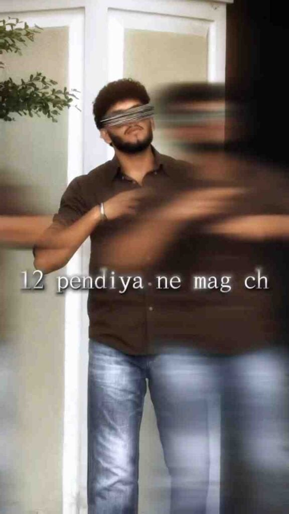

If you are looking for a simple and creative way to make a trending video, the 12 Pendi Ya Na Mag Song CapCut Template can be a useful choice. This ready-made template helps you turn your favorite photos and video clips into a music-based Reels edit without spending too much time on manual editing. You can add your own media and create a video that matches the song and template style. It can be useful for Instagram Reels, short videos, status videos, and other social media content. Choose your best photos or clips and give your video a creative touch.
What Is 12 Pendi Ya Na Mag Song CapCut Template?
The 12 Pendi Ya Na Mag Song CapCut Template is a ready-made video editing template created around the song and its music timing. Depending on the template, it may include smooth transitions, visual effects, text animations, filters, beat-based cuts, and other editing elements. Instead of creating everything manually, you can simply add your own photos or video clips to the available template. The template then arranges your selected media according to its existing design and timing. This makes the editing process easier for users who want to create a stylish music video without having advanced video editing skills.
Why Use the 12 Pendi Ya Na Mag CapCut Template?
Using a ready-made CapCut template can save time and make video editing easier, especially if you are new to editing. Normally, creating a music-based Reels edit requires selecting clips, arranging them on the timeline, adding transitions, matching the timing, and applying different effects. A template can simplify many of these steps by providing a pre-designed editing structure. You only need to select suitable photos or video clips and add them to the template. After that, you can preview the result and make any available changes.

How to Use 12 Pendi Ya Na Mag CapCut Template
Using the 12 Pendi Ya Na Mag Song CapCut Template is simple. Just follow the steps below:
- Open Google and search for Prompt Library.
- Visit the Prompt Library website.
- Find and open the 12 Pendi Ya Na Mag Song CapCut Template post.
- Scroll down and tap the Use Template on CapCut button.
- Check the template preview before starting.
- Select your favorite photos or video clips.
- Add the required media to the template.
- Wait for the template to process your selected content.
- Preview the completed video carefully.
- Check the transitions, timing, effects, and overall appearance.
- Make any available adjustments if required.
- Export or save your finished video.
Choose the Right Photos and Videos
Choosing the right photos and video clips can make a big difference to the final result. Try to select clear, bright, and good-quality photos that show the subject properly. If you are using video clips, choose short clips with steady footage and suitable framing. You can also select photos or clips that match the mood of the 12 Pendi Ya Na Mag song. Avoid using too many low-quality or blurry images because they may affect the overall appearance of the final video. Before adding your media, arrange your favorite content so you can quickly select the best files when using the template.
Share Your 12 Pendi Ya Na Mag Reels Edit
Once your video is ready, you can share your 12 Pendi Ya Na Mag Reels edit on your preferred social media platform. Before posting, watch the exported video once more to check the quality, timing, and overall appearance. You can add a simple caption that matches your video and use relevant hashtags related to the song, Reels, and video editing. If your video contains personal moments, choose the photos and clips you are comfortable sharing publicly. A clean video with good-quality media and suitable timing can make your social media post look more polished and enjoyable for viewers.
Final Words
The Trending 12 Pendi Ya Na Mag Song CapCut Template 2026 is a convenient way to create a music-based video using your favorite photos and video clips. Instead of starting the editing process from scratch, you can use the ready-made template and customize it with your own content. Select clear media, apply the template, check the timing and transitions, and make any available adjustments before exporting. You can also try different photos and clips to create your own style. I hope this guide helps you create your 12 Pendi Ya Na Mag Song Reels edit. If you face any problems while using the template, feel free to let me know in the comment box or on our Instagram page.